Architecture
Below are some diagrams of OnDemand's architecture:
Overview is a high level visual generated from PowerPoint.
System context and Container context diagrams below follow the C4 model for software diagrams, are more technically detailed and are built using
draw.ioRequest flow diagram is a sequence diagram built using plantuml.
Overview
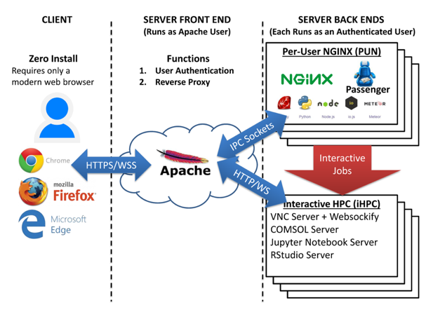
Apache is the server front end, running as the Apache user, and accepting all requests from users and serves four primary functions:
Authenticates user.
Starts Per-User NGINX processes (PUNs).
Reverse proxies each user to her PUN via Unix domain sockets.
Reverse proxies to interactive apps running on compute nodes (RStudio, Jupyter, VNC desktop) via TCP sockets.
The Per-User NGINX serves web apps in Ruby and NodeJS and is how users submit jobs and start interactive apps.
System context
Users use OnDemand to interact with their HPC resources through a web browser.
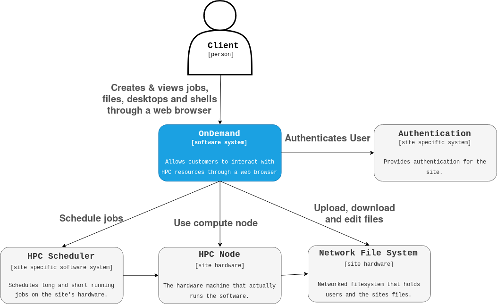
All the gray components are specific to a given site and outside the OnDemand system.
Container context
Tip
In the C4 nomenclature, 'containers' are one level below the system context. This is not to be confused with Linux containers via cgroups and namespaces (i.e. Docker or Singularity or OCI containers).
The Front-end proxy is the only component that is shared with all clients. The Front-end proxy will create Per User Nginx (PUN) processes (light blue boxes labeled "Per User Instance").
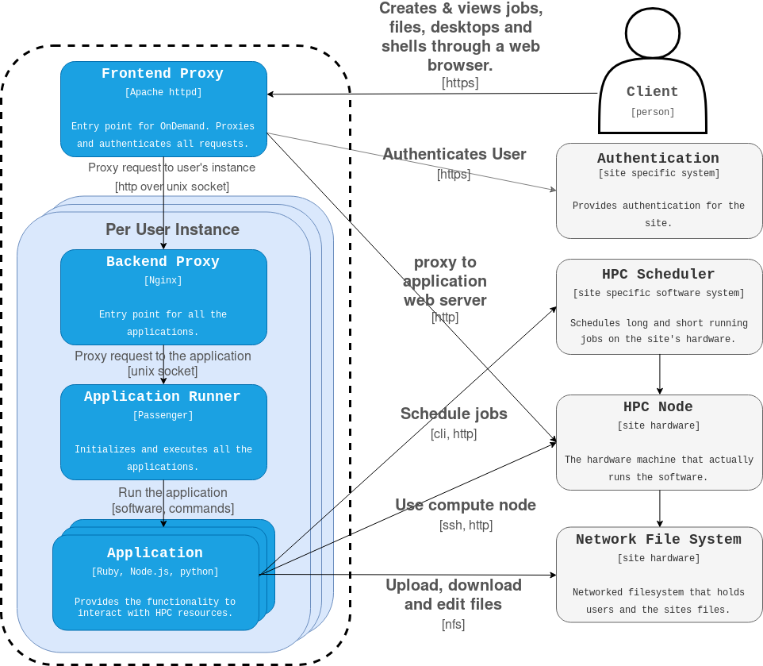
Everything contained in the dotted line is a part of the OnDemand system (see blue box in System context diagram).
Everything outside of it in gray is site specific components.
The "Per User Instance" light blue boxes are replicated for every user accessing the system.
Request Flow
This is the request flow through the OnDemand system. A user initiates a request through a browser and this illustrates how that request propagates through the system to a particular application (including the dashboard).
![@startuml
title Request flow through the OnDemand system
autonumber "<b>[0]"
participant User
participant "Apache Httpd"
participant Authentication
participant LuaScripts
participant Nginx
participant "Passenger/App"
User -[#red]> "Apache Httpd": request
activate "Apache Httpd"
"Apache Httpd" -[#red]> Authentication: Authenticate request
activate Authentication
Authentication -[#red]> "Apache Httpd" : Authenticate response
deactivate Authentication
"Apache Httpd" -[#green]> LuaScripts: Lua Hooks
activate LuaScripts
LuaScripts -[#green]> LuaScripts: map user
alt socket doesn't exist
LuaScripts -[#green]> Nginx: Start nginx as $user
end group
LuaScripts -[#green]> LuaScripts: modify request and proxy connection
"Apache Httpd" -[#blue]> Nginx: proxy request
deactivate LuaScripts
Nginx -[#blue]> "Passenger/App": proxy request
"Passenger/App" -[#blue]> Nginx: response
Nginx -[#blue]> "Apache Httpd": response
"Apache Httpd" -[#red]> User: response
deactivate "Apache Httpd"
legend left
|= |= Protocol |
|<back:red> </back>| https over tcp |
|<back:green> </back>| commands |
|<back:blue> </back>| http over unix socket |
endlegend
@enduml](_images/plantuml-6a8fdab5b21c9c0c998d0a21b362a10878872ac3.png)
Other Request Flow Diagrams
Dashboard Access
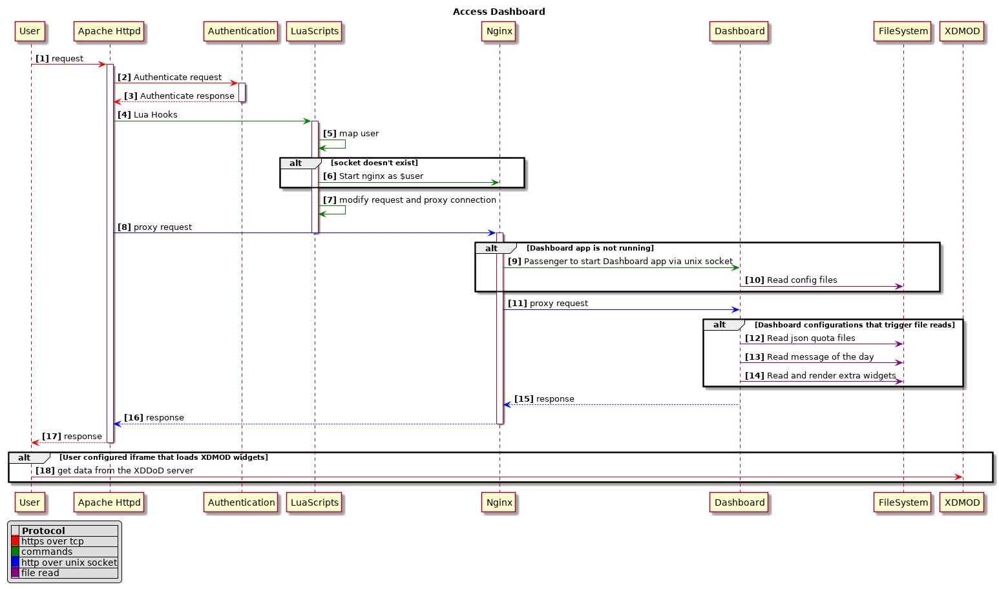
Passenger App
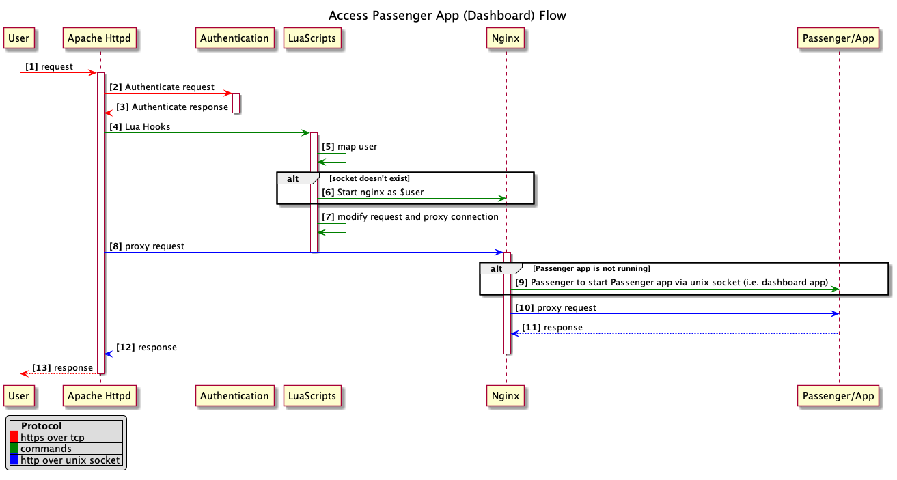
User App Sharing
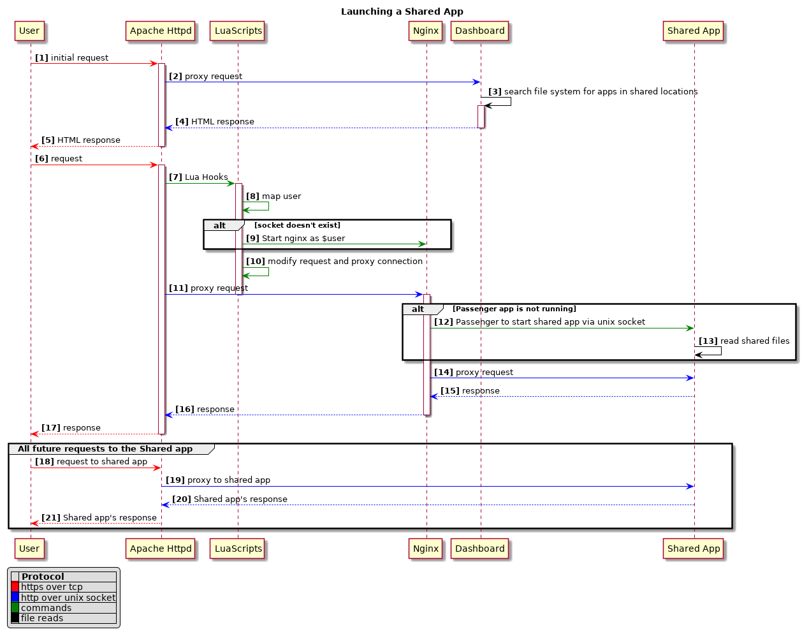
Authentication
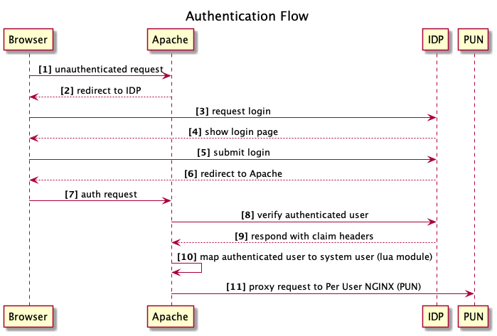
Linux Host Adapter
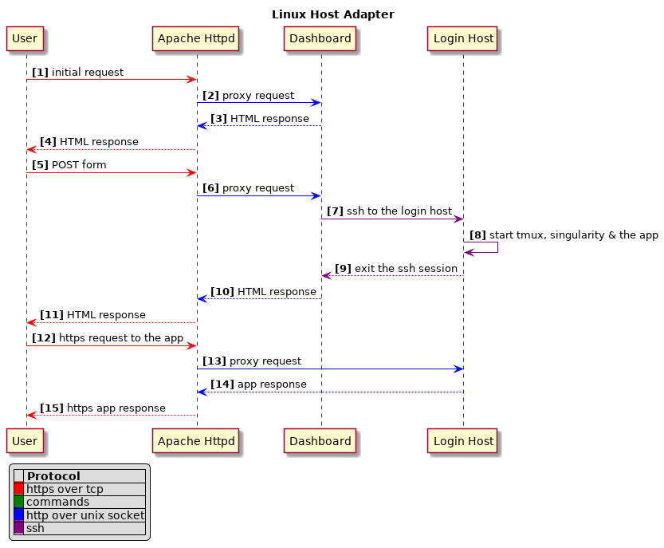
RStudio Job
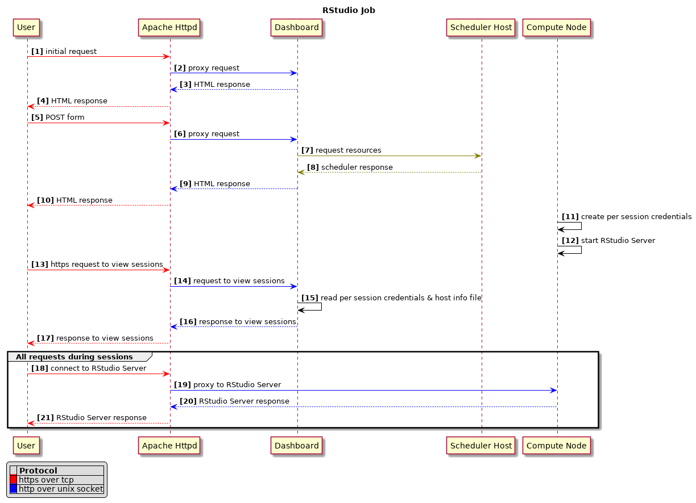
Shell Session
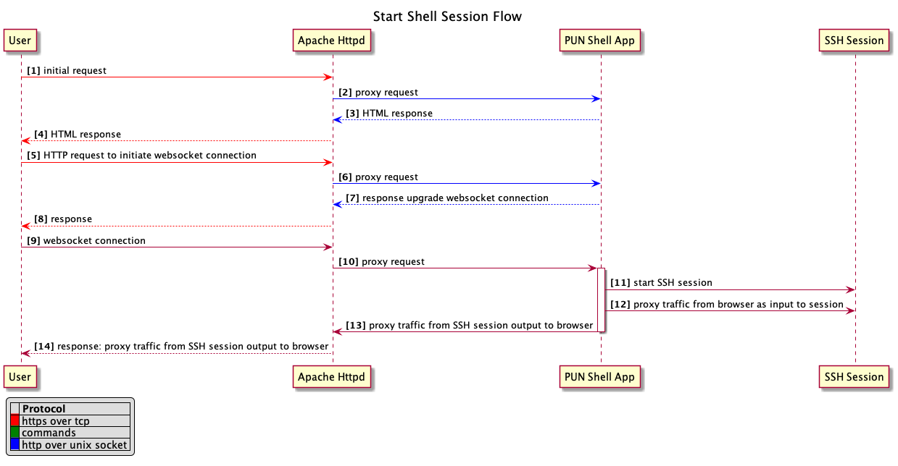
VNC Desktop Job
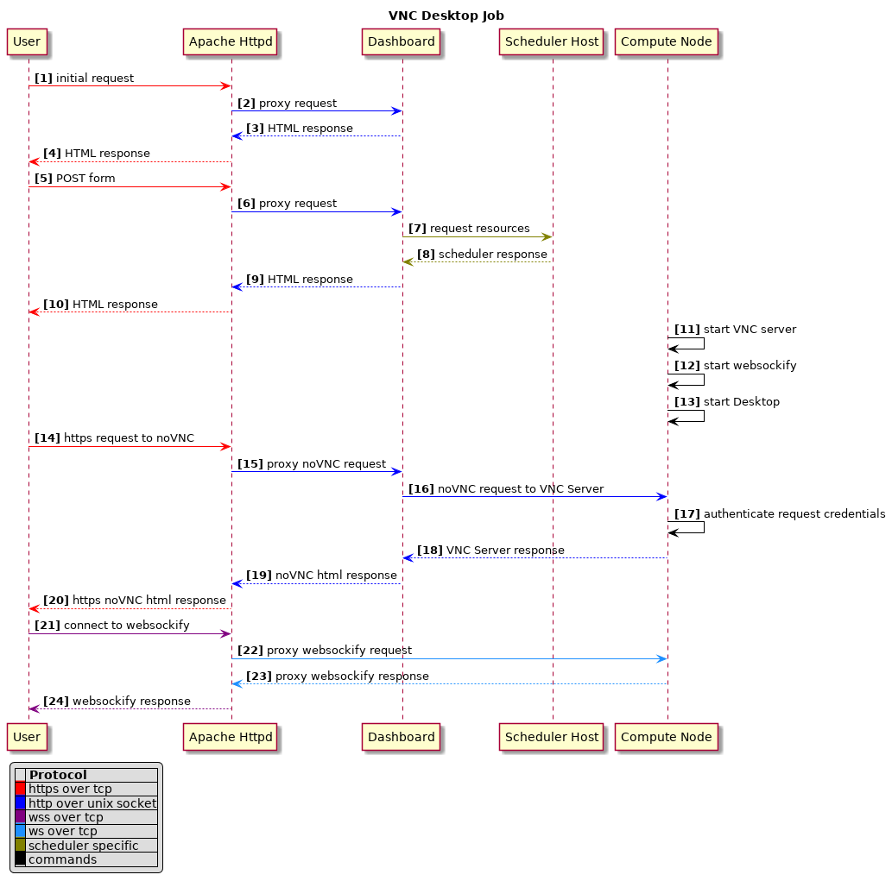